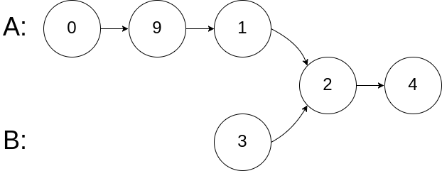

160. Intersection of Two Linked Lists



0 image::images/0160-4.png[]
没想到竟然可以将两个链表"相加"就可以得出正确结果：两个"相加"，正好两个长度相等，最后部分就是重叠部分，双指针完美搞定！
Write a program to find the node at which the intersection of two singly linked lists begins.
For example, the following two linked lists:

begin to intersect at node c1.
Example 1:

Input: intersectVal = 8, listA = [4,1,8,4,5], listB = [5,0,1,8,4,5], skipA = 2, skipB = 3 Output: Reference of the node with value = 8 Input Explanation: The intersected node's value is 8 (note that this must not be 0 if the two lists intersect). From the head of A, it reads as [4,1,8,4,5]. From the head of B, it reads as [5,0,1,8,4,5]. There are 2 nodes before the intersected node in A; There are 3 nodes before the intersected node in B.
Example 2:

Input: intersectVal = 2, listA = [0,9,1,2,4], listB = [3,2,4], skipA = 3, skipB = 1 Output: Reference of the node with value = 2 Input Explanation: The intersected node's value is 2 (note that this must not be 0 if the two lists intersect). From the head of A, it reads as [0,9,1,2,4]. From the head of B, it reads as [3,2,4]. There are 3 nodes before the intersected node in A; There are 1 node before the intersected node in B.
Example 3:

Input: intersectVal = 0, listA = [2,6,4], listB = [1,5], skipA = 3, skipB = 2 Output: null Input Explanation: From the head of A, it reads as [2,6,4]. From the head of B, it reads as [1,5]. Since the two lists do not intersect, intersectVal must be 0, while skipA and skipB can be arbitrary values. Explanation: The two lists do not intersect, so return null.
Notes:
-
If the two linked lists have no intersection at all, return
null. -
The linked lists must retain their original structure after the function returns.
-
You may assume there are no cycles anywhere in the entire linked structure.
-
Your code should preferably run in O(n) time and use only O(1) memory.
package com.diguage.algorithm.leetcode;
import com.diguage.algorithm.util.ListNode;
import com.diguage.algorithm.util.ListNodeUtils;
import java.util.Arrays;
import java.util.HashSet;
import java.util.Objects;
import java.util.Set;
/**
* = 160. Intersection of Two Linked Lists
*
* https://leetcode.com/problems/intersection-of-two-linked-lists/[Intersection of Two Linked Lists - LeetCode]
*
* Write a program to find the node at which the intersection of two singly linked lists begins.
*
* For example, the following two linked lists:
*
*
* begin to intersect at node c1.
*
* ----
*
* .Example 2:
* [source]
* ----
* Input: intersectVal = 8, listA = [4,1,8,4,5], listB = [5,0,1,8,4,5], skipA = 2, skipB = 3
* Output: Reference of the node with value = 8
* Input Explanation: The intersected node's value is 8 (note that this must not be 0 if the two lists intersect). From the head of A, it reads as [4,1,8,4,5]. From the head of B, it reads as [5,0,1,8,4,5]. There are 2 nodes before the intersected node in A; There are 3 nodes before the intersected node in B.
* ----
*
* .Example 2:
* [source]
* ----
* Input: intersectVal = 2, listA = [0,9,1,2,4], listB = [3,2,4], skipA = 3, skipB = 1
* Output: Reference of the node with value = 2
* Input Explanation: The intersected node's value is 2 (note that this must not be 0 if the two lists intersect). From the head of A, it reads as [0,9,1,2,4]. From the head of B, it reads as [3,2,4]. There are 3 nodes before the intersected node in A; There are 1 node before the intersected node in B.
* ----
*
* .Example 2:
* [source]
* ----
* Input: intersectVal = 0, listA = [2,6,4], listB = [1,5], skipA = 3, skipB = 2
* Output: null
* Input Explanation: From the head of A, it reads as [2,6,4]. From the head of B, it reads as [1,5]. Since the two lists do not intersect, intersectVal must be 0, while skipA and skipB can be arbitrary values.
* Explanation: The two lists do not intersect, so return null.
* ----
*
* *Notes:*
*
* If the two linked lists have no intersection at all, return `null`.
* The linked lists must retain their original structure after the function returns.
* You may assume there are no cycles anywhere in the entire linked structure.
* Your code should preferably run in O(n) time and use only O(1) memory.
*
* @author D瓜哥, https://www.diguage.com/
* @since 2020-01-12 11:12
*/
public class _0160_IntersectionOfTwoLinkedLists {
/**
* Runtime: 1 ms, faster than 99.29% of Java online submissions for Intersection of Two Linked Lists.
*
* Memory Usage: 43.3 MB, less than 5.71% of Java online submissions for Intersection of Two Linked Lists.
*
* Copy from: https://leetcode.com/problems/intersection-of-two-linked-lists/discuss/49785/Java-solution-without-knowing-the-difference-in-len![Java solution without knowing the difference in len! - LeetCode Discuss]
*/
public ListNode getIntersectionNode(ListNode headA, ListNode headB) {
if (Objects.isNull(headA) || Objects.isNull(headB)) {
return null;
}
ListNode a = headA;
ListNode b = headB;
while (a != b) {
a = a == null ? headB : a.next;
b = b == null ? headA : b.next;
}
return a;
}
/**
* Runtime: 8 ms, faster than 14.19% of Java online submissions for Intersection of Two Linked Lists.
* <p>
* Memory Usage: 44.2 MB, less than 5.71% of Java online submissions for Intersection of Two Linked Lists.
*/
public ListNode getIntersectionNodeSet(ListNode headA, ListNode headB) {
if (Objects.isNull(headA) || Objects.isNull(headB)) {
return null;
}
Set<ListNode> nodes = new HashSet<>();
ListNode current = headA;
while (Objects.nonNull(current)) {
nodes.add(current);
current = current.next;
}
current = headB;
while (Objects.nonNull(current)) {
if (nodes.contains(current)) {
return current;
}
current = current.next;
}
return null;
}
public static void main(String[] args) {
_0160_IntersectionOfTwoLinkedLists solution = new _0160_IntersectionOfTwoLinkedLists();
ListNode l11 = ListNodeUtils.build(Arrays.asList(4, 1, 8, 4, 5));
ListNode l12 = ListNodeUtils.build(Arrays.asList(5, 0, 1));
l12.next.next.next = l11.next.next;
ListNode r1 = solution.getIntersectionNode(l11, l12);
ListNodeUtils.printListNode(r1);
}
}